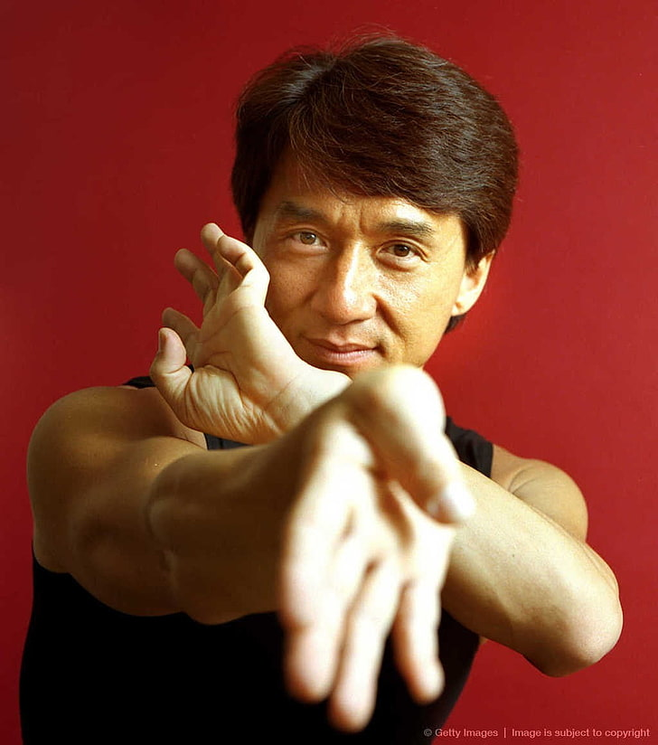

Actor
Jackie Chan
Biografia
Chan Kong-sang, conocido por su nombre artístico Jackie Chan, es un artista marcial, comediante, cantante, actor, acróbata, doble de acción, coordinador de dobles de acción, director, guionista, productor y actor de voz chino.
Filmografia
- Little Tiger of Canton 1971
- Fist of Fury 1972
- Enter the Dragon 1973
- Police Woman 1973
- Hand of Death 1976
- New Fist of Fury 1976
Familia
Cónyuge:
- Joan Lin es una actriz taiwanesa
Hijos:
- Etta Ng Chok Lam 1999
- Jaycee Chan 1982